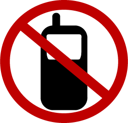
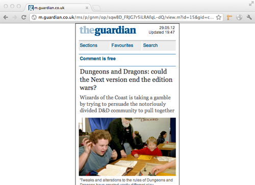
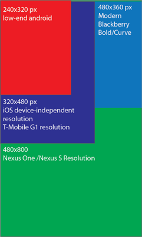
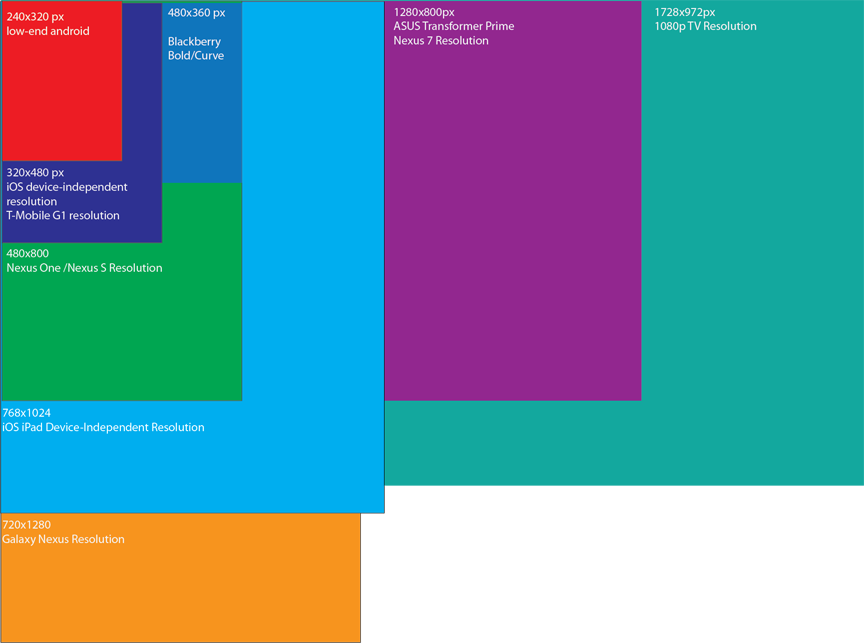
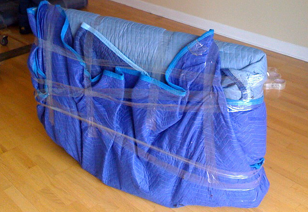
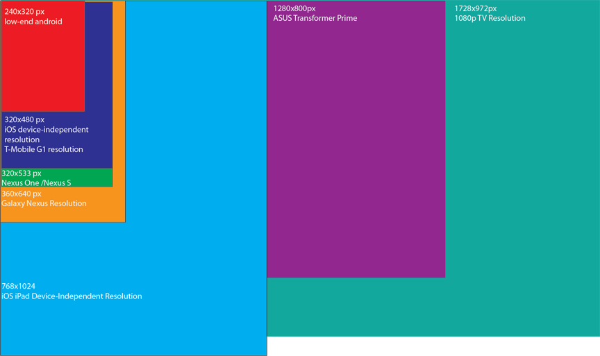

Viewports: Designing for the Mobile Modern Web
The Modern Web
- The Mobile Web is just PART of the Web - You're not going to haul your TV down the street
- Mobile does not mean just phones - I can take a Netbook or a Tablet with me
- We should not make predictions about what devices people will use - (i.e. RIM still isn't dead)
- Who knows how people will view the web five years from now?
The Problem

- Web sites are deferring to native applications which display the same content
- Web applications (both PhoneGap and others) aren't gracefully dealing with multiple screen sizes
- Some sites have hard-coded URLs which display the mobile site, which don't detect screen size when sharing
- People still design for a single device or a single resolution and expect it to scale everywhere
What the problem used to be

- Mobile meant phones
- The largest resolution were higher-end Android devices
- iOS has a device-independent resolution
- Android resolutions were more flexible
- We roughly knew what pixels we were using
Lots of testing

What the problem is today

This is not a mobile web problem

How do we go about fixing this?
- Multiple versions? - May or may not be feasible
- CSS Media Queries? - Relies on assumptions about devices out in the wild
- Multiple Web Assets
- Viewport Meta Tag
- Javascript APIs for detecting DPI
- Test on multiple devices
- There is no silver bullet for this
Multiple Assets
- Needed for performance
- Scaled Images make scrolling suck!
- This isn't just a Web problem, native scrolling can suck too!
- Downsampling images just makes things janky
What about pixels?
- Pixels aren't real measurements
- CSS Pixels - pixels whose size is relative to scale
- Device Independent Pixels - CSS Pixes at 100% zoom
- Device Pixels - The actual pixels that you can't use
Pixel Density: Tablet vs Phone
- It's next to impossible to determine tablet or phone on pixels alone
- Arbitrary pixel cut-offs are arbitrary
- iOS will always report a pixel density of 2 for Retina Screens
- Android pixels were once equal to device pixels, but will not be any longer
- Use pixel cut-offs for orientation, or for device, or for both
- Actual Device Width on Android is devicePixels/pixelDensityRatio
This is what it really looks like in CSS pixels

The Viewport: Screen Width and Height
- Setting device-width is fun times!
- On many browsers, this will default to 320x480
- density-dpi is being deprecated, although many Android apps use this
- 100% zoom doesn't mean you'll get real pixels
<meta name="viewport"
content="
height = [pixel_value | device-height] ,
width = [pixel_value | device-width ] ,
initial-scale = float_value ,
minimum-scale = float_value ,
maximum-scale = float_value ,
user-scalable = [yes | no] ,
target-densitydpi = [dpi_value | device-dpi |
high-dpi | medium-dpi | low-dpi]
" />
CSS media queries
Webkit based:
<link rel="stylesheet" media="screen and (-webkit-device-pixel-ratio: 1.5)" href="hdpi.css" />
<link rel="stylesheet" media="screen and (-webkit-device-pixel-ratio: 1.0)" href="mdpi.css" />
<link rel="stylesheet" media="screen and (-webkit-device-pixel-ratio: 0.75)" href="ldpi.css" />
Mozilla based:
<link rel="stylesheet" media="screen and (-moz-device-pixel-ratio: 1.5)" href="hdpi.css" />
<link rel="stylesheet" media="screen and (-moz-device-pixel-ratio: 1.0)" href="mdpi.css" />
<link rel="stylesheet" media="screen and (-moz-device-pixel-ratio: 0.75)" href="ldpi.css" />
Or you can design for the web
<link rel="stylesheet" href="landscape.css" type="text/css" media="screen and (min-width: 1024px)" />
<link rel="stylesheet" href="portrait.css" type="text/css" media="screen and (min-width: 1023px)" />
- Using browser-specific CSS isn't the web
- This uses CSS pixels
- This is good for when width=device-width with no max-device-width
- This doesn't make sense for use with multiple versions
Javascript Detection
- Use this to determine pixel-density
- Can be used to execute CSS media queries
- Can be used with other APIs to determine type of device
- Can also be used to change things that CSS can't change (i.e. img tags)
Conclusion
- Multiple versions may save you from some of this headache, but only if you know how many pixels you have
- This gets complicated when pixel density is brought into the picture
- A mix of CSS Media Queries, Seperated Assets, and Javascript can help
- Test on multiple devices
- Don't give up